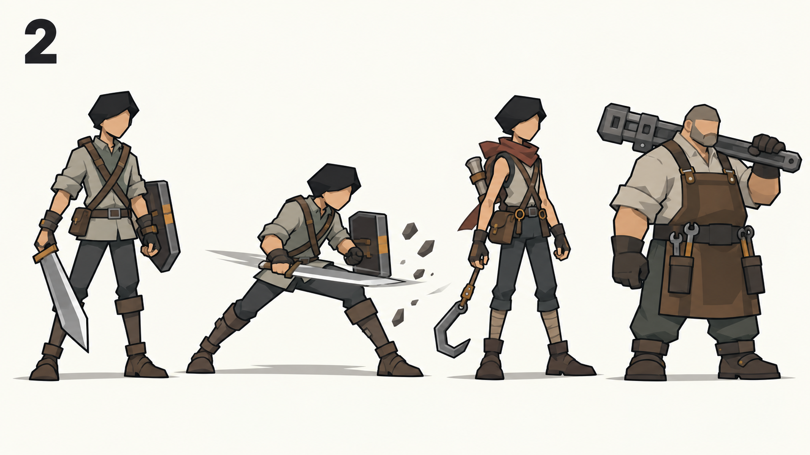
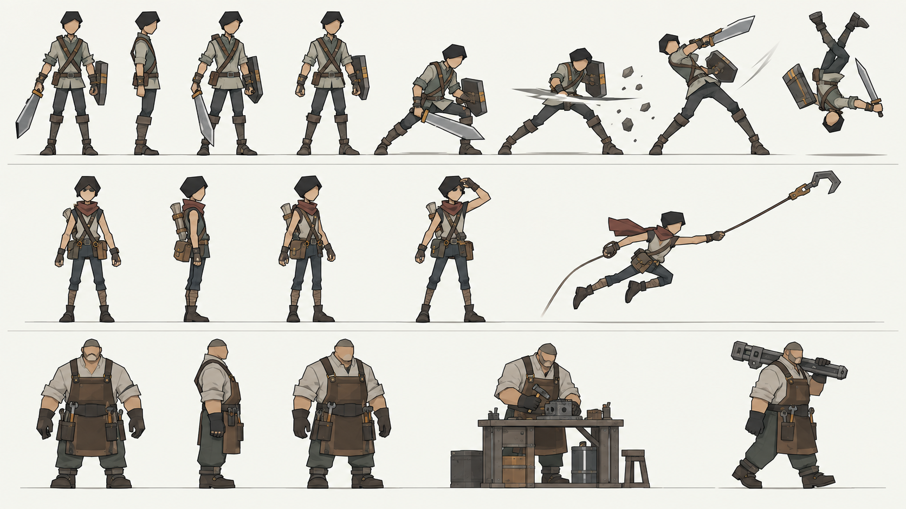

그래픽 담당자 전달 자료 · 기준 262a481c4fc2
Reference 제작·승인 순서
계약은 확정됐지만 개별 reference/composite 승인과 runtime 구현 검증은 별개입니다.
REF-01 · 1안 선택됨


| 선택 기록 | 현재 기준 |
|---|---|
| 선택안 | REF-01 option 1 · hero-rival-owner-candidate-v1.png |
| 주인공 체형 | 작은 머리·길고 가는 팔다리·낮은 무게중심 |
| 공격과 구르기 | 낮은 횡베기/접촉/강공 후반의 궤적과 장비를 동반한 실제 전방 회전 |
| 라이벌 구분 | 가벼운 정찰 체형·갈고리·스카프로 주인공과 다른 역할을 유지 |
| 고철장 주인 구분 | 넓고 무거운 체형·작업복·정비/운반 도구로 생활형 산업 현장 인물을 유지 |
| 다음 단계 | 선택 콘셉트 대비 vector 외형 완성도와 추가 중요 key pose를 검토 |
생성 원본: Hero master SVG · Rival master SVG · Owner master SVG
{kind=link}
{kind=link}
{kind=link}
3안 비교 승인 방식
앞으로 Human의 시각적 판단이 필요한 새 reference·Composition·중요 pose는 같은 조건에서 의미 있게 다른 3안을 한 번에 보여 줍니다. 선택된 한 안만 제작 authority가 되며 생성된 후보 수나 자동 검사 결과가 선택을 대신하지 않습니다.
| 단계 | 계약 |
|---|---|
| 후보 제시 | 같은 검토 조건에서 시각적으로 의미가 다른 3안을 한 번에 나란히 제시 |
| 차이 설명 | 실루엣·비율·구도·동작·재질 중 선택 결과를 바꾸는 핵심 차이를 각 안에 명시 |
| Human 선택 | Human이 고른 한 안만 다음 master SVG·Composition·authored pose 제작 기준으로 기록 |
| 후속 검증 | 선택, 원본 제작, export 검사, runtime 적용과 gameplay-scale 검증을 별도 상태로 유지 |
현재 우선순위
| 순서 | 제작 묶음 | 필수 reference/상태 | 이야기/역할 |
|---|---|---|---|
| REF-01 | Hero / Rival / Scrapyard Owner | design·개별 body profile·SVG parts·front/side/3/4·representative pose. 같은 family 안에서 다른 몸과 도구로 읽히는지 확인. | 관련 자료 |
| REF-02 | Control Core / Retrieval Arm | connected / captured rival / tension / detached / released. 동일 핵·손/갈고리·회수팔·소켓의 연결 anchor와 상태 관계. | 관련 자료 |
| REF-03 | Ancient Machine Awakening | dormant / socket seal / mono-eye on / scrap assembly / incomplete march. 비공포 생활 산업 톤과 거대한 scale. | 관련 자료 |
| REF-04 | Garage 0% | empty frame / core socket / independent module mounts. 이후 다섯 모듈을 자유 순서로 붙일 수 있는 하나의 기본 구조. | 관련 자료 |
| REF-05 | Prologue gameplay-scale composite | 실제 1280×720과 mobile 화면에서 인물·핵/팔·각성 병기·차고·배치·조명·주요 동작을 함께 검수하고 승인. | 관련 자료 |
제출할 reference sheet
| 대상 | 포함할 내용 |
|---|---|
| 캐릭터 | front / side / 3/4 / representative pose / action key pose / SVG part breakdown / joint·pivot / material / occlusion / gameplay scale |
| 애니메이션 | key pose sheet / silhouette / line of action / center of mass / torso twist / weapon path / contact pose / follow-through. 승인 pose와 재사용 clip을 구분. |
| 환경 | Composition reference / Unique Landmark / Prefab breakdown / Kit / XYZ·depth relationship / far·mid·near / color·material profile / gameplay-scale composite |
승인 후 확장
REF-05의 prologue gameplay-scale composite를 승인한 뒤 enemy archetype → 폐광↔항구 → 나머지 지역으로 진행합니다. reference는 구현 authority이며 Codex가 중요한 액션 pose나 주요 Composition을 처음부터 임의로 만들고 완성 처리하지 않습니다. 기존 주인공 동작 스타일의 확인을 모든 새 sheet의 승인으로 확대하지 않습니다.
미정 처리
인물의 이름/성별/과거사, 미정 적 종류, 지역 사건 세부와 세계관을 임의로 채우지 않습니다. 구현 선택은 well-known 방식/업계 사례를 먼저 조사하고 명백한 hybrid+override는 반복 인터뷰 없이 제안합니다. 게임 느낌·아트 결과·콘텐츠 양·되돌리기 어려운 구조가 크게 갈릴 때만 조사 후 실질적으로 다른 3안을 제시합니다.
기존 이야기의 미정·충돌요청/승인 기록
요청서에 master/pose/Composition ID와 버전, 승인한 reference/composite, gameplay scale capture, 미정과 runtime 검증 결과를 구분해 적습니다. 등록/생성/단위 테스트 통과는 승인 표시가 아닙니다.
갱신된 요청서